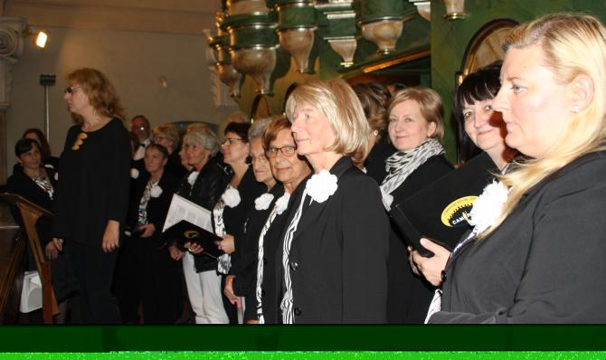

A tymczasem w Cameracie...
.
2015-10-1i3
„Muzyka - to jest wyłom, przez który dusza, jak więzień z więzienia leci czasem w regiony wolności. Muzyka - to córa wszystkich muz”./S. Żeromski/
Przypadający 1 października Międzynarodowy Dzień Muzyki uczniowie i absolwenci Szkoły Muzycznej I stopnia w Wieliczce oraz Szkoły Muzycznej I stopnia im. Mjr Hieronima Henryka Baranowskiego w Krakowie, a także chór Camerata działający pod patronatem Centrum Kultury i Turystyki w Wieliczce, uczcili koncertami w kościele św. Klemensa w Wieliczce (1 października) oraz w Kolegiacie św. Anny w Krakowie (3 października). Okazją do muzycznego świętowania były także przypadająca w tym roku 330-ta rocznica urodzin dwóch mistrzów epoki baroku – Jana Sebastiana Bacha i Jerzego Fryderyka Haendla, a także chęć duchowego przygotowywania się poprzez obcowanie z muzyką do zbliżających się Światowych Dni Młodzieży. Koncerty poprzedziła Msza Święta, której oprawę muzyczną przygotowali uczniowie i absolwenci klasy improwizacji organowej pod kierunkiem Małgorzaty Bały, ze Szkoły Muzycznej I stopnia im. Mjr Hieronima Henryka Baranowskiego w Krakowie, a także działający w tamtejszej placówce chór, pod dyrekcją Beaty Klimek. Na repertuar koncertów złożyły się wybitne dzieła wokalno-instrumentalne i instrumentalne muzyki barokowej.

Chorał Jana Sebastian Bacha Christ lag in Todesbanden (Chrystus w więzach śmierci leżał) został zaprezentowany w dwóch odsłonach – jako przygrywka chorałowa z Orgelbüchlein BWV 625, z wdziękiem zaprezentowana przez Bartłomieja Chmielewskiego (absolwenta SM I st. im. Mjr H. H. Baranowskiego, obecnie ucznia klasy organów Agnieszki Walczy, PSM II st. im. W. Żeleńskiego w Krakowie)
oraz Kantata BWV 4. I to właśnie w tym, wymagającym dziele można było usłyszeć pełnię zaawansowania bachowskiej techniki wokalno-instrumentalnej, kunszt i misterię prowadzenia poszczególnych głosów, z którą bardzo dobrze poradził sobie chór Camerata.
„Ucieczka”, „gonitwa głosów” stanowiła podstawę „Małej” fugi g-moll BWV 578 Jana Sebastian Bacha, która zabrzmiała w interpretacji Bartłomieja Chmielewskiego. Duży aplauz wśród słuchaczy wzbudził duet sopranowy Marii Komisarz i Roksany Sadowskiej, absolwentek SM I st. w Wieliczce, które nadal wytrwale pracują pod kierunkiem Izabeli Szoty. Świeżość, wdzięk i precyzja, które zaprezentowały w dwóch ariach Henry'ego Purcell’a, (a także w partiach solowych Glorii A. Vivaldiego i kantaty J.S. Bacha) należały do wyjątkowych.
Równie porywająca okazała się interpretacja IV Sonaty skrzypcowej D-dur Jerzego Fryderyka Haendla przez Gabrielę Baltaza (uczennicę klasy skrzypiec Bogusławy Ziegelheim, SM I st. w Wieliczce). Lekkość, wrażliwość dźwiękowa, dokładność oraz głębia, wypływająca z wnikliwego rozumienia muzyki cechowały grę tej młodziutkiej skrzypaczki, której harmonijny rozwój przebiega w sposób wielce obiecujący.
Muzyczny wieczór zakończyło radosne Alleluja z oratorium Mesjasz J. F. Haendla, którego zgromadzona publiczność – na wzór angielskiej tradycji – wysłuchała na stojąco.
Solistom oraz chórowi Camerata towarzyszyły Paulina Tkaczyk (klawesyn) oraz Maria Zbroja (organy), bez profesjonalizmu których jakość artystycznych wrażeń z pewnością nie byłaby tak wysoka.
A więc… niech żyje muzyka!
/Anna Kozłowska/

© Stowarzyszenie Muzyczne Chór Camerata Wieliczka
Projekt i wykonanie:  Prowadzenie strony: Małgorzata Wysocka-Cebula
Prowadzenie strony: Małgorzata Wysocka-Cebula